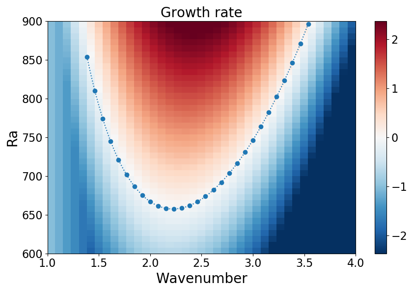

DescriptionConvection is an important process in every star, as well as in many planets. It transports heat, mixes material, and often plays a role in the generation of the magnetic fields we observe at the surfaces of these objects. In this project we will explore the equations describing convection in an idealised context. 
How vigorous the convection is is often characterised by a dimensionless number, Ra, which gives a measure of the strength of buoyancy forces relative to viscous forces. In particular, convection only onsets above a critical value, Racrit. This project will begin by looking at the underlying equations that govern convection in a fluid and then by calculating Racrit for simple fluid systems. Mathematically, this involves setting up and solving a linear eigenvalue problem, the simplest of which can be solved analytically. For more complex cases (involving more realistic physical effects) students would be encouraged to write a short numerical code to examine these cases. Depending on particular interests, there is scope for this project to head in a number of directions. For example, the addition of different physical effects (e.g., rotation or magnetism) on the convection could be considered; or different geometries. Alternatively, for those particularly interested in numerical modelling, it is possible to extend the problem into the nonlinear regime and to study aspects of the convection there. Prerequisites/CorequisitesAnalysis In Many Variables II is required. Some basic knowledge of numerical computations in Python (or similar) would be useful, but not essential. It is recommended that Fluid Mechanics III is taken alongside doing this project. Resources
For more information email: Laura Currie |